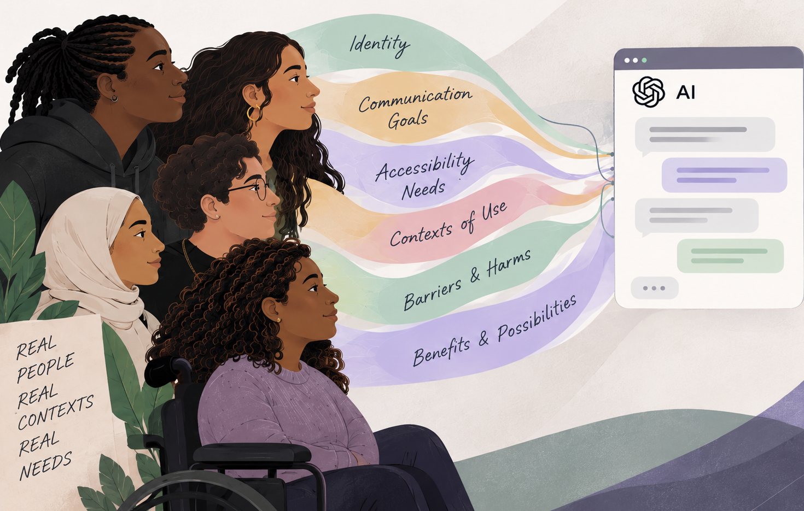

Selected project Blog
Context-Sensitive Access: Examining Identity Navigation in AI-Mediated Interactions Among Multicultural People with Disabilities

This project explores how, where, and why multilingual and multicultural people with disabilities navigate identity as part of AI-mediated accessibility. People may adjust how they communicate to fit different tools, settings, and goals.
For now, this is a placeholder for a closer look at the project’s questions, methods, and early ideas. We are interested in how AI might support or complicate these choices, and what it could mean to center user agency.
More details and reflections will be added as the work develops.